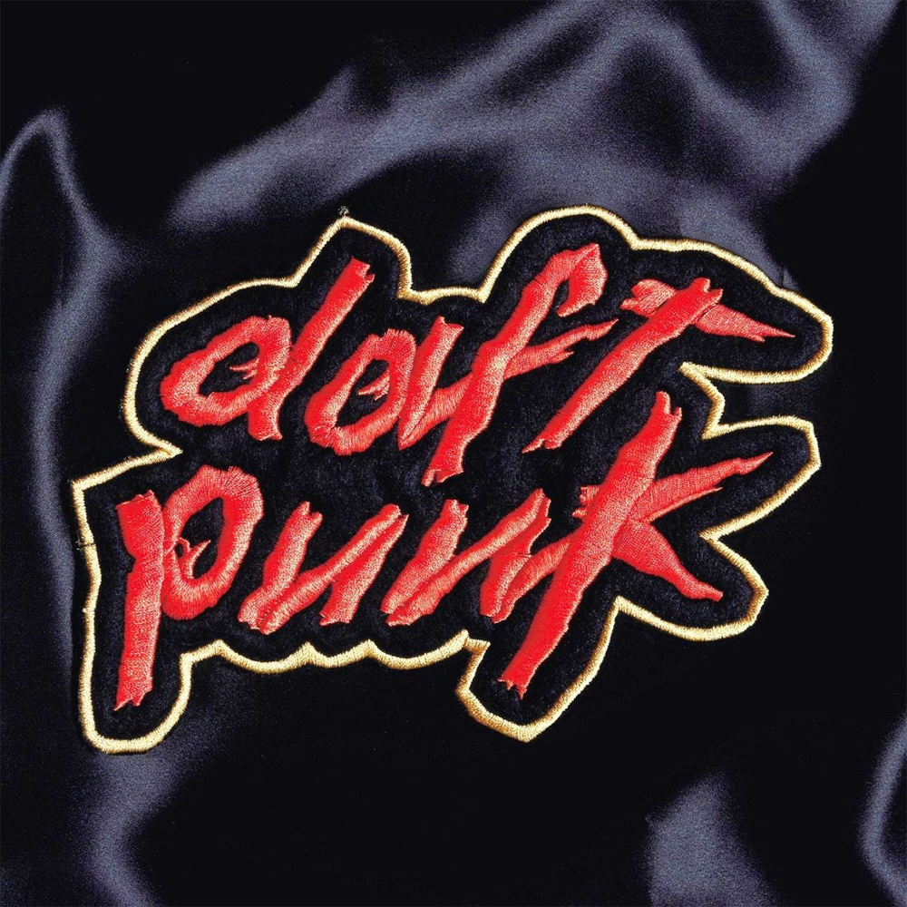
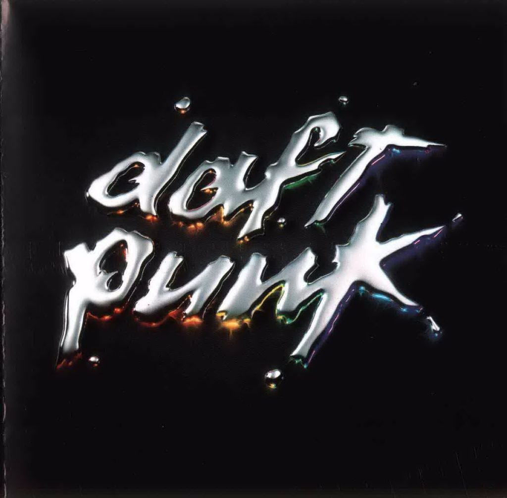
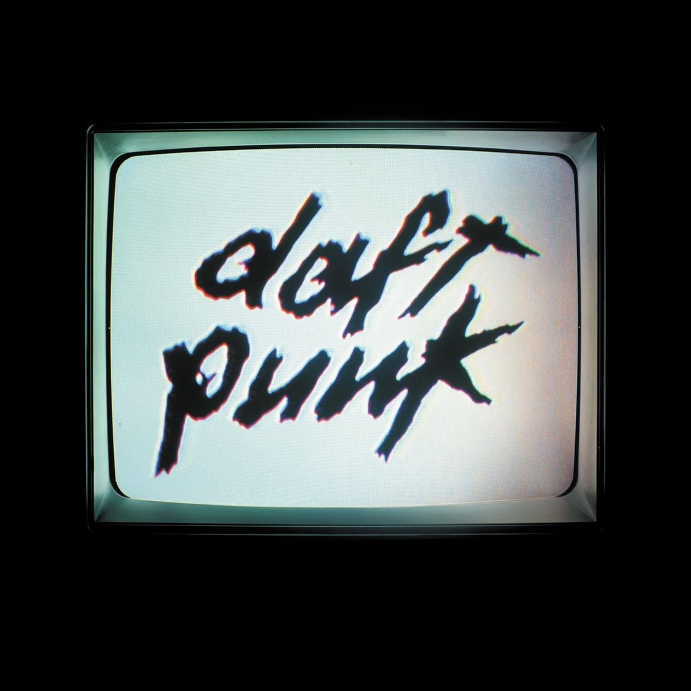
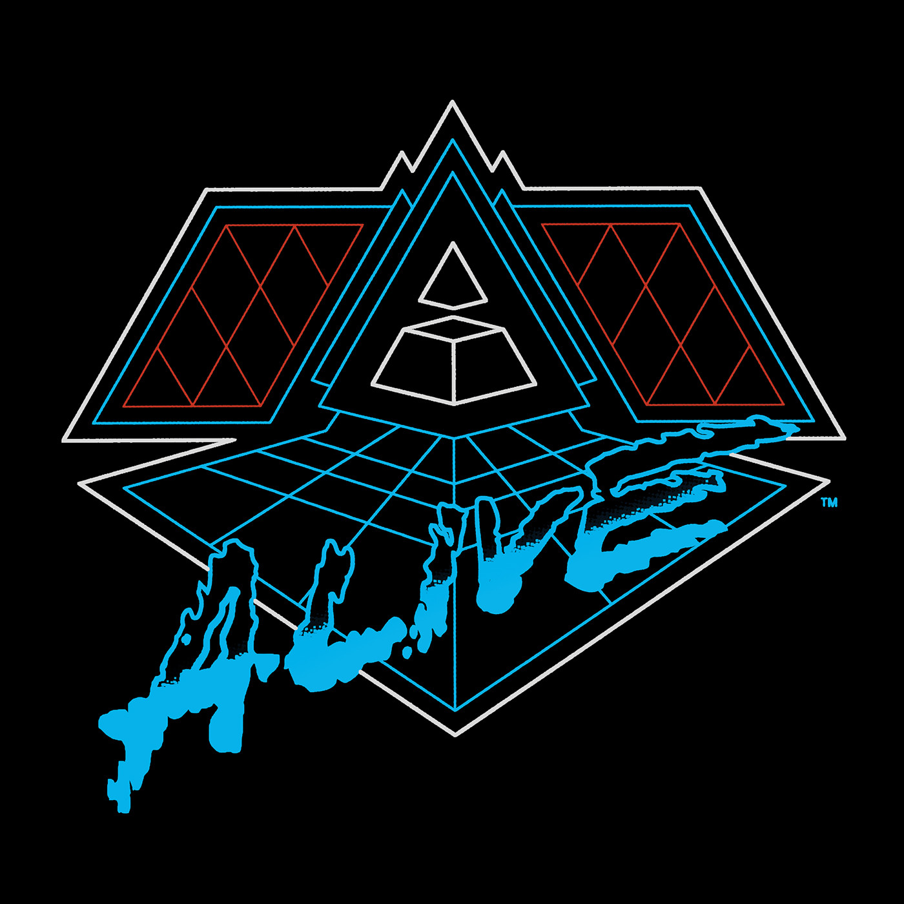

HOMEWORK 1994
Homework was Daft Punk's first major studio release. It garnered great reviews for it's fusion of techno and funk music, as well as it's aggressive sound. It had big radio hits such as 'Da Funk' and 'Around the World'. But Daft Punk wouldn't have worldwide success until their sophmore outing.
DISCOVERY 2001
Daft Punk's second studio record is what would make them a household name. Huge radio playtime for tracks like 'One More Time' and 'Harder Better Faster Stronger' made them arguably the world's most popular electronic musicians.
HUMAN AFTER ALL 2005
Human After All is by far Daft Punk's most intense album. Featuring inlfuences from rock music and grundge. This album was referred to by the duo as 'pure improvisation'.
ALIVE 2007 2007
Alive 2007 was Daft Punks most influential live record and the best album for their current situation. HAA had recieved mixed reviews at the time, and combining music from that album as well as their two previous proved to everyone how good it really was.
TRON LEGACY SOUNDTRACK 2011

Always seeking to challenge themselves, Daft Punk took up the reigns to create their first motion picture soundtrack. Tron Legacy's Soundtrack was also Daft Punk's first experiment with orchestral instrumentation that would show up on their next full length record.
RANDOM ACCESS MEMORIES 2013

A love letter to the funk music of the 60's and 70's, Random Access Memories takes the music of Daft Punk's inspiration and makes it their own. Featuring less sampling and more live instrumentation than any of their previous albums.
 Columbia Records 2019
Columbia Records 2019